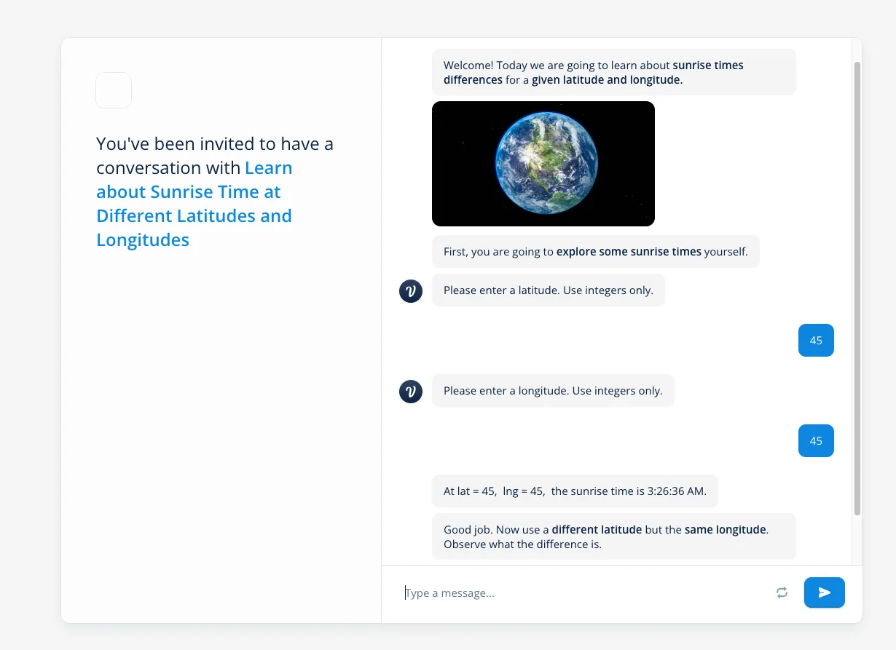

Here are several small projects from the course Tools for Online Learning. The purpose of showcasing these projects is to demonstrate my skills in using different authoring tools, which I can apply in other scenarios:)

Articulate Rise
I created a data science literacy course using Articulate Rise. To encourage interactive learning, I used hotspots, knowledge checks, immediate feedback, and branching scenarios in the modules.
Voiceflow
This project allows learners to learn the impact of latitudes and longitudes on sunrise times. I integrated an API of sunrise times in Voiceflow with learning science principles, such as contrasting cases and invent-then-tell.


Learning Analytics
I examined real-world learners' data for online university programs to identify potential factors that lead to learners' academic excellence. Using Python to run linear regression models, decision tree classifiers, and random forest classifiers, I found that demographic factors, access to the internet, health, study time, and previous grades can predict, on average, 93% of learners' final grades (pass/fail).
The top three factors are first-term grade, second-term grade, and health, suggesting the necessity of interventions based on learners' previous grades.